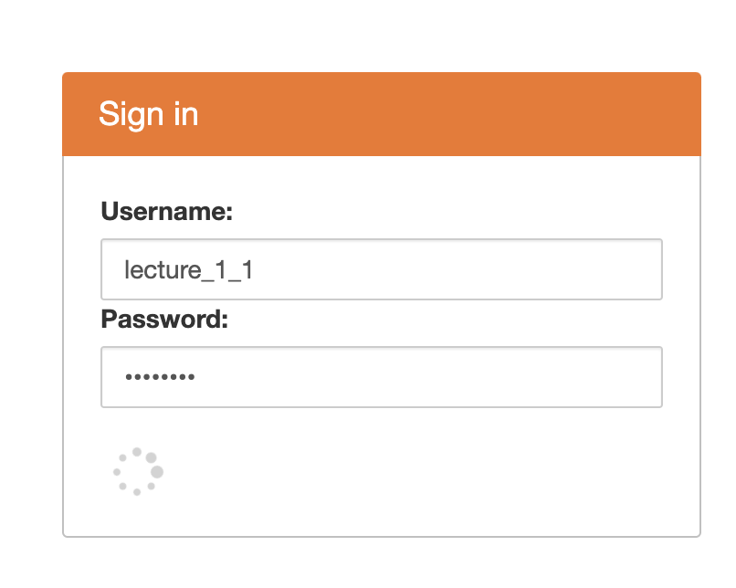
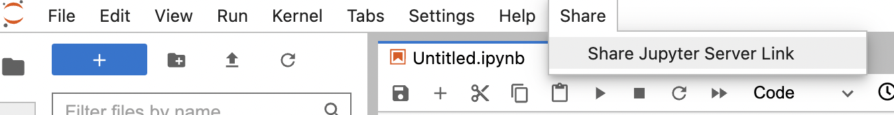
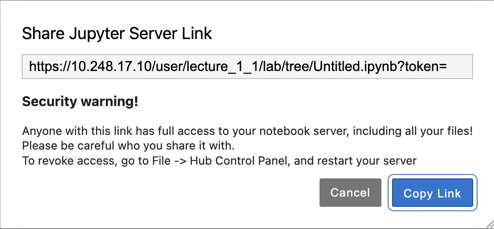
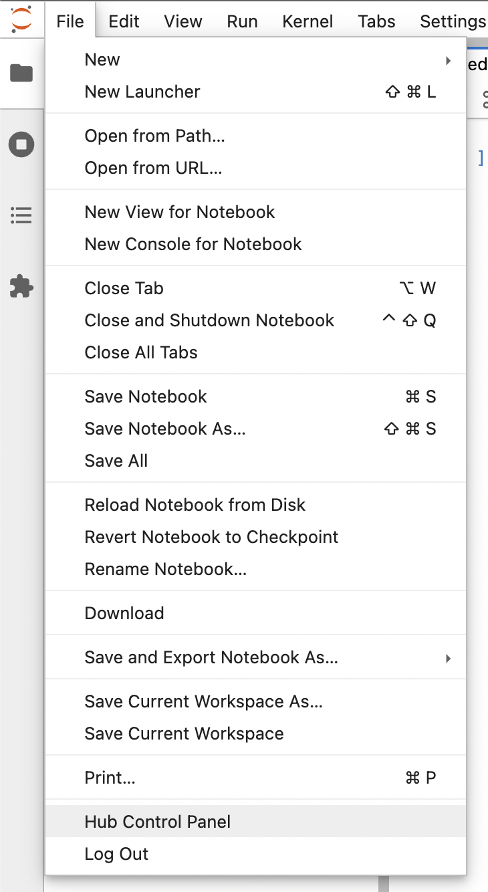
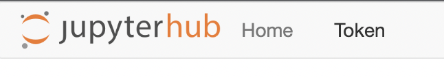
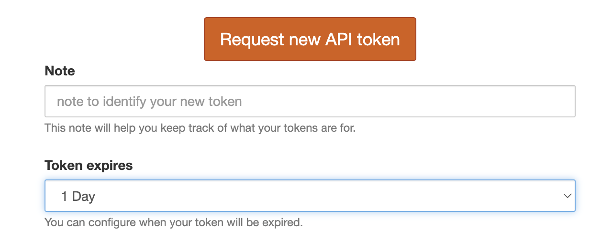
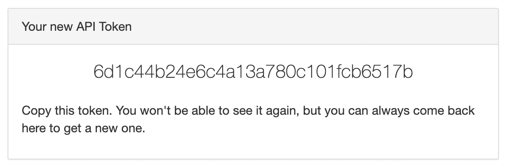

Peer Programing
Peer Programing#
We find it very valuable to work collaboratively on code. Our JupyterHub provides an interface for peer programing. Here we provide instructions
Make sure you are connected to the Drexel network or logged into the VPN
Login using the shared credential provided to you. They will look like
Lab_X_Y, orLecture_X_YAccess the file that you would like to work on either through the website, creating a new file, or uploading it within the interface.
Click the share menu and select
share Jupyter server linkCopy the link by clicking
copy link- Share this link with your team (note, if you use the link provided in your email you will have to navigate to the same file) 
If you have been provided with a token skip to step
Go to file and select
hub control panel. Click on
token

Set a time when the token should expire and click create token

Copy the token provided. You will only be able to see this once.

Share the token with your team
Construct the URL by taking the part that was copied and adding the token to then end.
It should look something like https://jupyterhub.coe.drexel.edu/user/XXXXX/lab/?token=YOURTOKENHERE